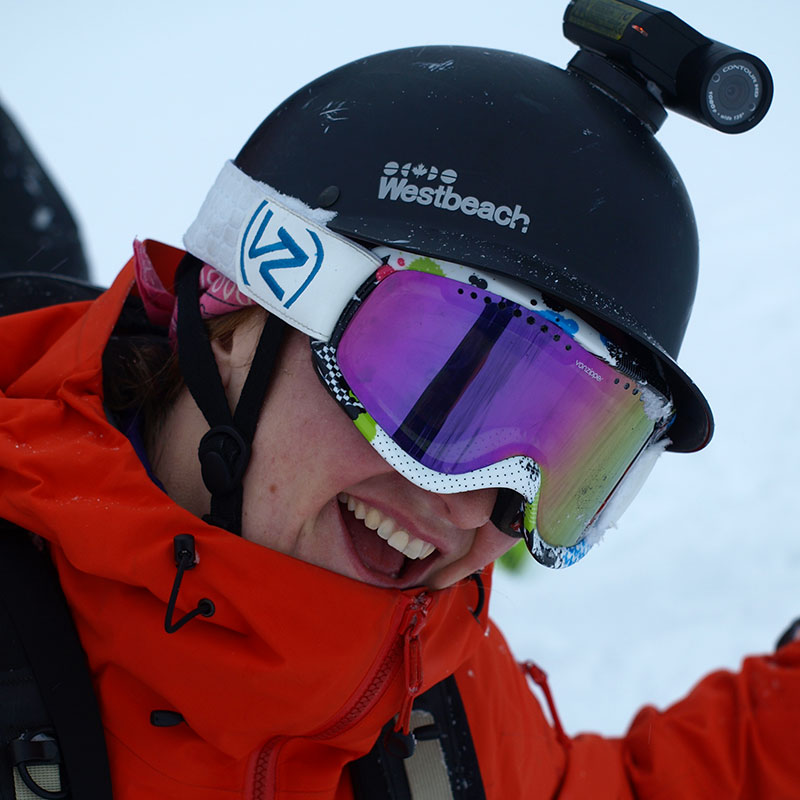

<div id="content">
  <div id="main">
    <div class="container">
      <div class="one_third">
        
      </div>

     <div class="two_third last">
        <h1>Catherine Eagles</h1>
        <div><strong style="font-family: Helvetica;">MEET CATHERINE...&nbsp;</strong><span>I grew up riding the North Shore mountains in BC, that's where snowboarding became a way of life and not just something I did on the weekends. Naturally     I became a powder hunter, which led me to move to several mountain towns and shred all over BC. As I progressed I started seeking other adventures     so I split my oldest Never Summer board, one of the first Premiers ever made. I am still riding that board in the backcountry. I now live in Terrace,     BC and life is good!</span>							</div>
        <div>
          <br /> </div>
        <div><strong style="font-family: Helvetica;">CATHERINE'S FAVORITE NS BOARD IS...&nbsp;</strong><span>The Chairman - it's wide and light, perfect for the west&nbsp;coast pow...I just float over that shit!</span> </div>
      </div>
      <hr>
  </div>
</div>